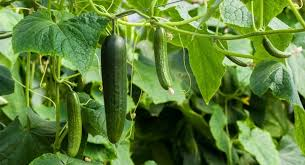
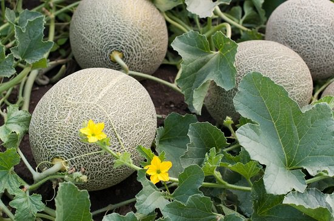

Major Zaid Crops
Watermelon

About the crop :- Watermelon (Citrullus lanatus) is a flowering plant species of the Cucurbitaceae family . A scrambling and trailing vine-like plant, it was originally domesticated in Africa. It is a highly cultivated fruit worldwide, with more than 1,000 varieties.
Soil required for the crop :- Sandy loam rich in organic matter with good drainage and pH range for 6.5-7.5 is ideal for cultivation of watermelon.
Weather conditions & Temperature needed :- Being a warm season crop, the plant requires ample sunshine and dry weather for production of fruits. In case they are grown in places where winter is prevalent, then they must be provided with adequate protection from cold and frost. They are extremely sensitive to the slightest of frost and hence care must be taken to keep the frost away from the crop. The temperature ranging between 25-30°C is optimum for the growth of these plants. Moreover, they cannot survive in temperatures less than 10°C.
Largest Producing states :- Watermelons are mainly cultivated in Maharashtra, Karnataka, Tamil Nadu, Punjab, Rajasthan, Madhya Pradesh, and Uttar Pradesh
MSP provided for the crop :- 700 per quintal
Cucumber 
About the crop :- The cucumber is a creeping vine that roots in the ground and grows up trellises or other supporting frames, wrapping around supports with thin, spiraling tendrils. The plant may also root in a soilless medium and will sprawl along the ground if it does not have supports. The vine has large leaves that form a canopy over the fruits.
Soil required for the crop :- A well drained loamy soil is preferred by cucumber.It is necessary that soils should be fertile and well provided with organic matter.Cucumber prefers a Ph of 5.5-6.8.It cannot tolerate high salt concentration.
Weather conditions & Temperature needed :- The optimum daily average air temperature is 15-24°C (65-75°F). Optimum temperatures for growth are at night, about 18°C, and during the day, about 28°C accompanied by high light intensity.
Rainfall needed :- 120-150mm rainfall
Largest Producing states :- Karnataka, Tamil Nadu, and Andhra Pradesh
MSP provided for the crop :- 800 Rs per quintal
Muskmelon 
About the crop :- Muskmelon (Cucumis melo) is a species of melon that has been developed into many cultivated varieties. These include smooth-skinned varieties such as honeydew, Crenshaw, and casaba, and different netted cultivars (cantaloupe, Persian melon, and Santa Claus or Christmas melon).
Soil required for the crop :- Muskmelon thrives best in sandy or sandy loam soil with pH 6 to pH 6.8, good fertility and drainage
Weather conditions & Temperature needed :- Muskmelon is a hot and dry season crop. It also requires plenty of sunshine. Continuous rain or high humidity will increase disease problems and reduce flowering and fruit setting. The growth will be slow when the weather is cold. The seed germinates best at the temperature of 28°C - 30 °C and grows well at 25°C - 35°C.
Rainfall needed :- The average annual rainfall required by muskmelon is 50-75mm.
Largest Producing states :- Uttar Pradesh, Andhra Pradesh, Punjab, Madhya Pradesh and Karnataka
MSP provided for the crop :- 3000 per/quintal